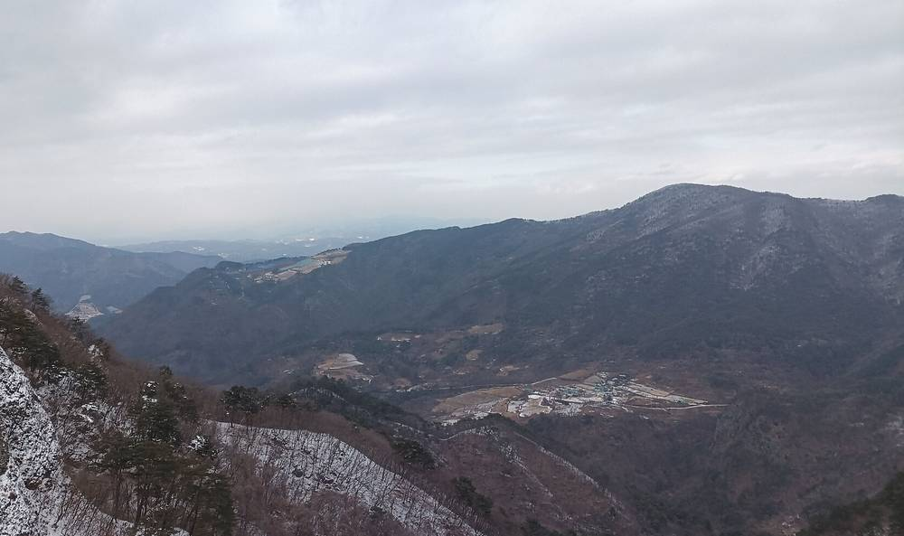

봉화 명호면 고계1리, 농촌 RE100 실증마을로…3년간 10억 원 들여 주민 협동조합과 마을발전소

농식품부 공모에 뽑혀 국비·지방비 5억 원씩…주택·농산물 가공시설 태양광과 에너지 진단까지, 발전 수익은 취약계층 지원·마을 공익사업에
경북 봉화군 명호면 고계1리가 주민 협동조합과 함께 마을 재생에너지 발전소를 세우는 농촌 RE100 실증 마을이 된다. 봉화군은 농림축산식품부가 주관하는 '2026년 농업·농촌 RE100 실증지원 공모사업'에 최종 선정됐다고 5일 밝혔다. 군은 국비 5억 원과 지방비 5억 원 등 10억 원을 들여 앞으로 3년 동안 고계1리 일원에서 고계1리태양광협동조합과 함께 주민 주도형 마을발전소를 짓고, 주택과 농산물 가공·유통시설에 태양광 설비를 달며, 마을 에너지 사용량 진단과 컨설팅도 한다. 이 공모사업은 농촌 마을이 쓰는 에너지를 재생에너지로 바꿔 탄소 배출을 줄이고 발전 수익을 공동체를 살리는 데 쓰게 하려는 것으로, 군은 마을발전소 운영 수익을 에너지 취약계층 지원과 마을 공익사업에 쓸 계획이다. 최기영 봉화군수는 이번 선정을 발판으로 에너지 가격 상승에 시달리는 주민이 혜택을 실제로 느끼는 농촌 에너지 복지 모델을 만들겠다고 말했다. 봉화군은 사업을 2026년부터 2028년까지 진행하며, 마을 유휴부지에 공동 발전소를 세우고 농산물 가공·저온저장·유통 시설 옥상에 태양광을 올린다. 공동 발전소의 전력 판매 수익은 협동조합 운영비를 뺀 전액을 마을 기금으로 쌓아, 홀몸 어르신 등 에너지 취약계층을 위한 에너지 바우처와 마을 쉼터 개선, 어르신 급식 지원에 쓸 방침이다.
시민에너지 관점
국비·지방비 10억 원이 마을발전소로 들어가고 그 수익이 다시 취약계층과 마을 공익사업으로 돌아가는 구조는, 재생에너지가 농촌에서 땅을 내주는 일이 아니라 마을 살림을 키우는 일이 될 수 있음을 보여 준다. 실증 기간 3년이 끝나면 설비 관리와 수익 배분이 흐지부지될 수 있다는 걱정도 있지만, 처음부터 주민 협동조합이 설비를 소유하고 운영하며 수익 쓰임을 조합원 총회에서 정한다면 사업은 보조금 기간이 지나도 이어진다. 독일·덴마크 농촌에서 주민 협동조합이 발전 설비를 함께 소유해 온 것도 수익이 마을 밖으로 빠져나가지 않게 하려는 같은 원리다. 정부는 이번 실증을 몇몇 마을의 시범으로 끝내지 말고, 마을 협동조합이 스스로 발전소를 지을 수 있도록 계통 접속과 장기 저리 융자를 함께 열어 전국 농촌으로 넓혀야 한다.
출처: 대한경제 2026-11-05 류효환 원문 보기
출처: 이뉴스투데이 2026-11-05 손철규 원문 보기
奉化郡明湖面のコゲ1里、農村RE100実証村に…3年間で10億ウォン投じ住民協同組合と村の発電所
農林畜産食品部の公募に選ばれ国費・地方費5億ウォンずつ…住宅・農産物加工施設の太陽光とエネルギー診断も、発電収益はエネルギー弱者支援と村の公益事業に
慶尚北道奉化郡明湖面のコゲ1里が、住民協同組合とともに村の再生可能エネルギー発電所を設ける農村RE100の実証村になる。奉化郡は5日、農林畜産食品部が主管する「2026年農業・農村RE100実証支援公募事業」に最終選定されたと明らかにした。郡は国費5億ウォンと地方費5億ウォンの計10億ウォンを投じ、今後3年間、コゲ1里一帯でコゲ1里太陽光協同組合とともに住民主導型の村の発電所を建て、住宅や農産物の加工・流通施設に太陽光設備を設け、村のエネルギー使用量の診断とコンサルティングも行う。この公募事業は農村の村が使うエネルギーを再生可能エネルギーに切り替えて炭素排出を減らし、発電収益を共同体の活性化に充てることを狙いとしており、郡は村の発電所の運営収益をエネルギー弱者の支援と村の公益事業に使う計画だ。チェ・ギヨン奉化郡守は、今回の選定を足がかりに、エネルギー価格の上昇に苦しむ住民が恩恵を実感できる農村エネルギー福祉モデルをつくると述べた。奉化郡は事業を2026年から2028年まで進め、村の遊休地に共同発電所を建て、農産物の加工・低温貯蔵・流通施設の屋上に太陽光を載せる。共同発電所の売電収益は協同組合の運営費を除いた全額を村の基金として積み立て、一人暮らしの高齢者などエネルギー弱者向けのエネルギーバウチャーや村の休憩所の改修、高齢者の給食支援に充てる方針だ。
市民エネルギーの視点
国費・地方費10億ウォンが村の発電所に投じられ、その収益が再びエネルギー弱者と村の公益事業に戻る仕組みは、再生可能エネルギーが農村にとって土地を差し出すことではなく、村の暮らしを支える手段になり得ることを示している。3年間の実証が終われば設備の管理や収益配分がうやむやになるとの懸念もあるが、当初から住民協同組合が設備を所有・運営し、収益の使い道を組合員総会で決めれば、事業は補助金の期間を過ぎても続いていく。ドイツやデンマークの農村で住民協同組合が発電設備を共同で所有してきたのも、収益を村の外に流出させないという同じ原理による。政府は今回の実証を一部の村の試行で終わらせず、村の協同組合が自ら発電所を建てられるよう系統接続と長期低利融資を併せて開き、全国の農村に広げるべきだ。
出典: 大韓経済 2026-11-05 リュ・ヒョファン 原文を読む
出典: イーニューストゥデイ 2026-11-05 ソン・チョルギュ 原文を読む
奉化郡明湖面Gogye 1里成为农村RE100示范村…3年投入10亿韩元与居民合作社共建村级电站
入选农林畜产食品部公开征集，国费、地方费各5亿韩元…住宅及农产品加工设施光伏、能源诊断同步推进，发电收益用于能源弱势群体支援和村庄公益事业
韩国庆尚北道奉化郡明湖面Gogye 1里将成为与居民合作社共建村级可再生能源电站的农村RE100示范村。奉化郡5日宣布，已在农林畜产食品部主管的"2026年农业·农村RE100示范支援公开征集项目"中最终入选。郡政府将投入国费5亿韩元和地方费5亿韩元共10亿韩元，在今后3年内与Gogye 1里光伏合作社一道，在Gogye 1里一带建设居民主导型村级电站，在住宅和农产品加工、流通设施上安装光伏设备，并开展村庄能源使用量诊断和咨询。该项目旨在把农村村庄使用的能源转换为可再生能源以减少碳排放，并把发电收益用于振兴社区，郡政府计划将村级电站的运营收益用于支援能源弱势群体和村庄公益事业。奉化郡守Choi Ki-young表示，将以此次入选为契机，打造让饱受能源价格上涨之苦的居民切实感受到实惠的农村能源福利模式。奉化郡将于2026年至2028年推进该项目，在村内闲置用地上建设共同电站，并在农产品加工、低温储藏和流通设施屋顶安装太阳能板。共同电站的售电收益在扣除合作社运营费用后将全部存入村庄基金，用于为独居老人等能源弱势群体发放能源券、改善村庄休息场所和支援老人供餐。
市民能源视角
国费和地方费共10亿韩元投入村级电站、收益再回流到能源弱势群体和村庄公益事业，这种结构表明，可再生能源对农村来说可以不是让出土地，而是壮大村庄生计的手段。有人担心3年示范期结束后设备管理和收益分配会不了了之，但如果从一开始就由居民合作社拥有并运营设备、由社员大会决定收益用途，项目在补贴期结束后也能延续下去。德国、丹麦农村的居民合作社长期共同拥有发电设备，也是出于不让收益流出村外的同一原理。政府不应让这次示范止步于少数村庄的试点，而应同时放开并网接入和长期低息贷款，让村级合作社能够自行建设电站，并推广到全国农村。
来源: 大韩经济 2026-11-05 Ryu Hyo-hwan 查看原文
来源: Enews Today（韩国） 2026-11-05 Son Cheol-gyu 查看原文
Gogye 1-ri in Bonghwa's Myeongho-myeon becomes a rural RE100 pilot village, building a village power plant with a residents' cooperative on 1 billion won over three years
Selected in an agriculture ministry competition with 500 million won each in national and local funds; solar on homes and farm-produce processing facilities plus energy audits, with power revenue going to energy-poor households and village public projects
Gogye 1-ri, a village in Myeongho-myeon, Bonghwa County, North Gyeongsang Province, will become a rural RE100 pilot village where a residents' cooperative builds a village renewable energy power plant. Bonghwa County said on the 5th that it had been finally selected for the "2026 Agriculture and Rural RE100 Demonstration Support" competition run by the Ministry of Agriculture, Food and Rural Affairs. Over the next three years the county will spend 1 billion won, 500 million won each from national and local budgets, working with the Gogye 1-ri Solar Cooperative to build a resident-led village power plant, install solar equipment on homes and on farm-produce processing and distribution facilities, and provide energy-use audits and consulting for the village. The program aims to switch the energy rural villages use to renewables, cutting carbon emissions and putting power revenue toward revitalizing the community, and the county plans to use income from the village plant to support energy-poor households and fund village public projects. Bonghwa County Governor Choi Ki-young said the county would use the selection as a stepping stone to build a rural energy welfare model whose benefits residents struggling with rising energy prices can actually feel. The county will run the project from 2026 to 2028, building the shared plant on idle village land and putting solar panels on the roofs of facilities for processing, cold storage and distribution of farm produce. All revenue from the shared plant's power sales, after the cooperative's operating costs, will go into a village fund, which the county plans to spend on energy vouchers for vulnerable residents such as elderly people living alone, upgrades to village rest areas and meal support for older residents.
Citizen Energy View
A structure in which 1 billion won of national and local money goes into a village power plant and the revenue flows back to energy-poor households and village public projects shows that renewable energy can be a way for rural communities to strengthen their livelihoods rather than give up their land. Some worry that equipment upkeep and revenue sharing will fade once the three-year pilot ends, but if a residents' cooperative owns and runs the plant from the start and its members' general meeting decides how the revenue is spent, the project can outlast the subsidy period. Rural residents' cooperatives in Germany and Denmark have long co-owned generating equipment on the same principle of keeping the income from leaving the village. The government should not let this pilot end as a trial in a handful of villages; it should open grid connection and long-term low-interest loans together so that village cooperatives can build their own plants, and spread the model to rural areas nationwide.
Source: The Daehan Economic Daily 2026-11-05 Ryu Hyo-hwan Read the original
Source: E-News Today 2026-11-05 Son Cheol-gyu Read the original